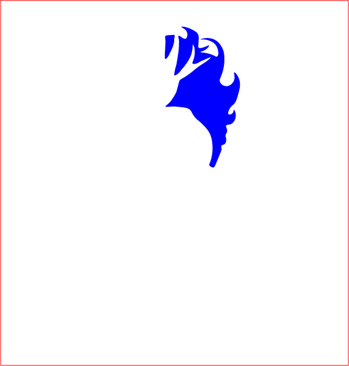
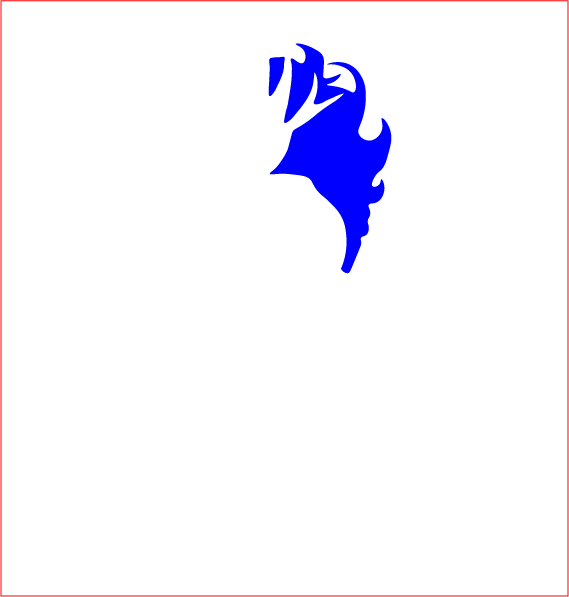
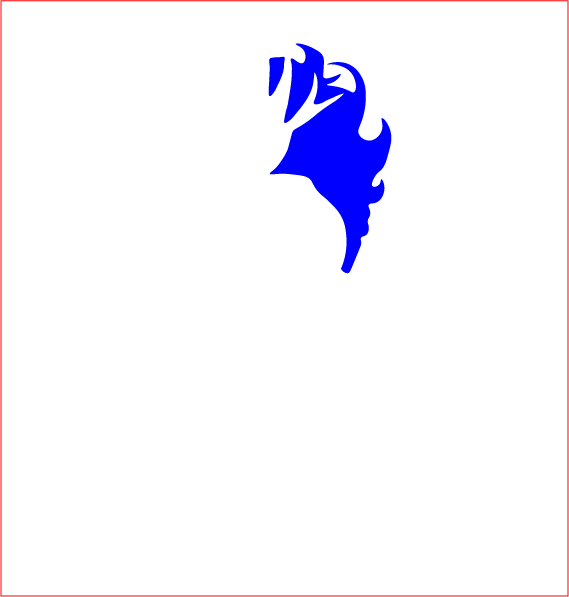
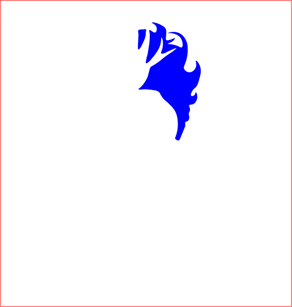

 

Mireille Suzanne Francette Porte, dite Orlan, née le 30 mai 1947 à Saint-Étienne, est une artiste plasticienne française transmédia et féministe.
Elle vit et travaille entre Paris, New York et Los Angeles.
Elle pratique la peinture, la sculpture, la photographie et la vidéo, et réalise des installations et performances.
Elle utilise également les médias numériques et les biotechnologies. Dans son travail, elle fait le choix d'écrire son pseudonyme en lettres capitales : ORLAN.